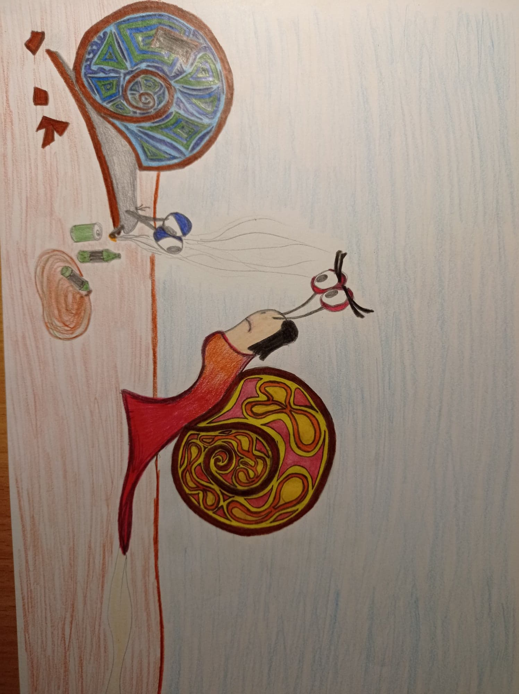
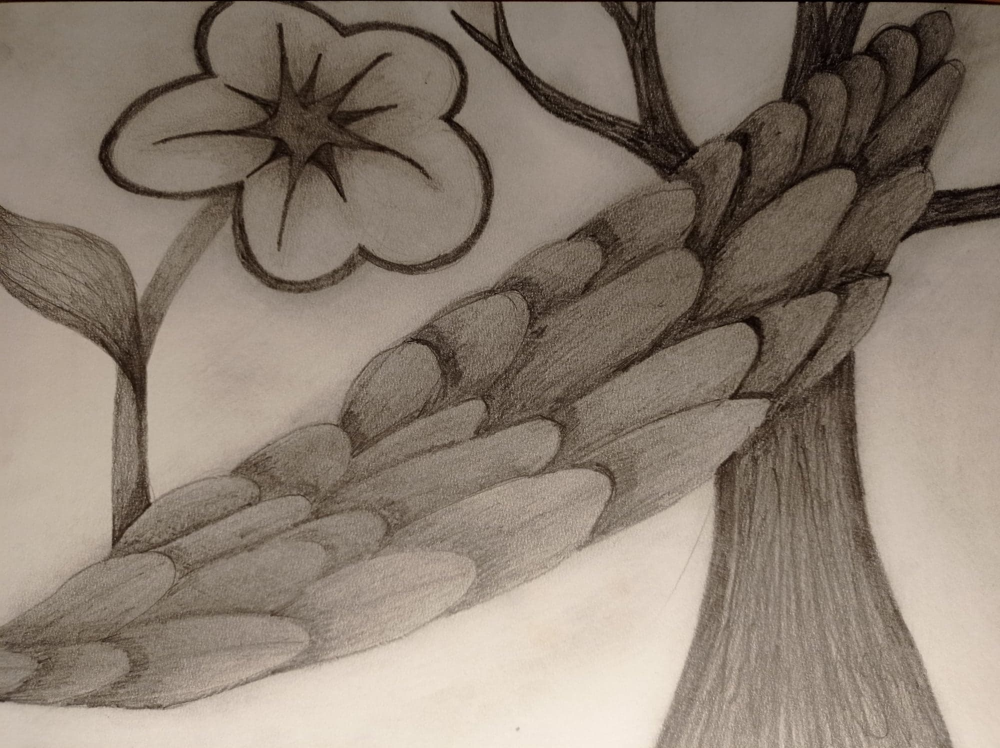
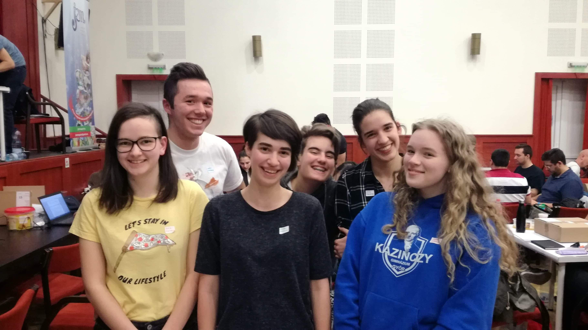
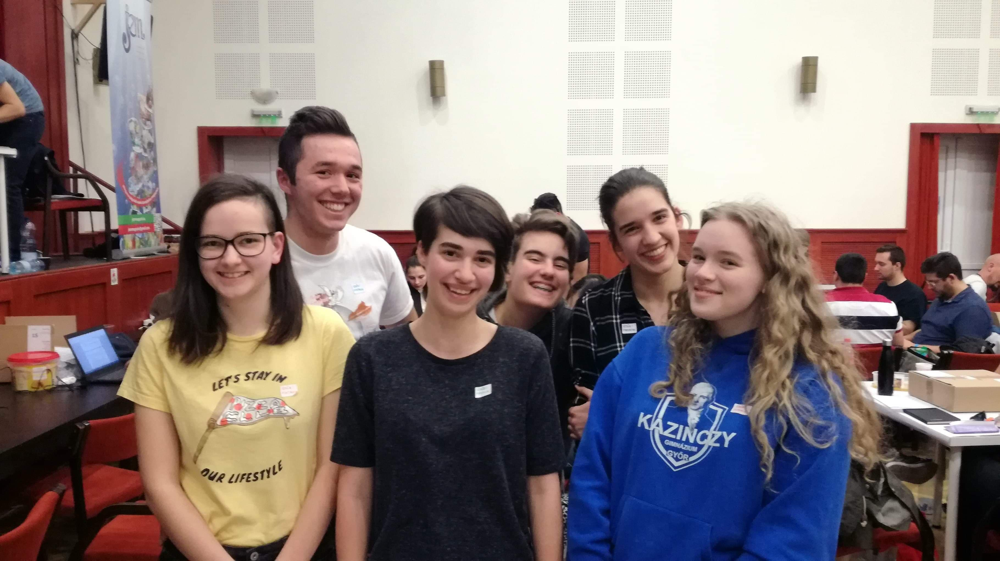

Hobbijaim
-
Már kiskorom óta nagyon szeretek rajzolni, bár nem vagyok egy túl nagy művész. Igazából, ha pontos akarok lenni, akkor inkább a színezés része az, amit szeretek, ezért van az, hogy bármit rajzolok (még ha realisztikusnak indul, akkor is), a végén mindig valami gyerekkönyvbe illő illusztráció szerű dolog lesz az eredmény.
 
Igazából az összes rajzom ilyen fura, a másodikról például én sem tudom minek indult.
-
Imádok olvasni és van egy egész polcom tele könyvekkel, amik közül van, amit többször is elolvastam. (Beszúrnék ide egy képet róla, de nagyon nagy rumli van rajta mióta hazaköltöztem a kollégiumból, mert nincs hová tennem az edényeimet.)
Mostanában nagyon sokat olvasok angolul, sőt most az egyik kedvenc regényem is egy angolra lefordított, de amúgy kóreai történet. Emiatt bár nagyon sokat fejlődött az angol szókincsem és egyre könnyebben értek meg bonyolultabb angol szövegeket is, úgy érzem a magyar beszédemnek nem tesz jót, hogy néha angolul jutnak eszembe előbb szavak. -
Szeretek a barátaimmal időt tölteni, például teázni (távteázni, ha karanténban kell lenni), társasjátékozni, vagy csak úgy Győrben vagy Budapesten a városban lébecolni. Különböző, érdekesnek tűnő csapatversenyeken is sokszor vettünk részt együtt, mint például társasjáték fejlesztő versenyen vagy a nemzeti színháztörténeti vetélkedőn, ahol egy darabot is elő kellett adni.

 

Az első két kép a színdarabunk előadása után készült a Nemzeti Színházban (ezért vagyok rajtuk fiúnak öltözve), a harmadik pedig a társasjáték tervező versenyen